九龙城寨：从下水道冲到天台 · 本轮成果
内部预览页（不公开收录）。视频和截图都是真实游戏画面；动作 GIF 是游戏引擎逐帧渲染的骨骼动画，按实际速度循环播放。
这一轮改了什么
- 骨骼和动作全部自研：主角、10 种敌人、5 位人形首领不再沿用《百面刑天》的自动绑骨和通用动作库。零件按正侧面重画，在肩、肘、腕、髋、膝、踝真实关节处切开；动作按关键姿势逐个摆（跑步的着地 / 下沉 / 交错 / 腾空，挥砍的蓄力 / 出手 / 随势 / 收势），落地的脚用 IK 固定不滑。
- 首领各有招牌动作：猪肉荣双钩旋风，无影手六条机械手术臂和无影灯光环，庄家背后的轮盘（大招时升到头顶转），寨主热能刀指天蓄力再砸地，双生保镖警棍连击。
- 实机录屏重录：不再是机器人乱晃；按镜头脚本拍：开场就是食街混战 → 天井钩索 → 猪肉荣 → 天台寨主 → 标题画面。
- 商店截图换成 6 个不同的瞬间：首领前摇（带攻击范围提示）、首领大招、钩索、超频慢动作等，不再是 6 张「人站在中间」。
- 广告变现、成就已接通（36 个成就已发布，白金成就等平台审核）。
实机录屏（40 秒，1920×1080，游戏原声）
商店截图

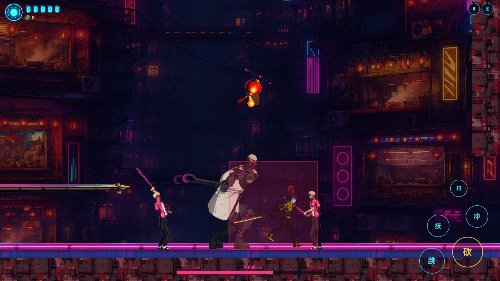

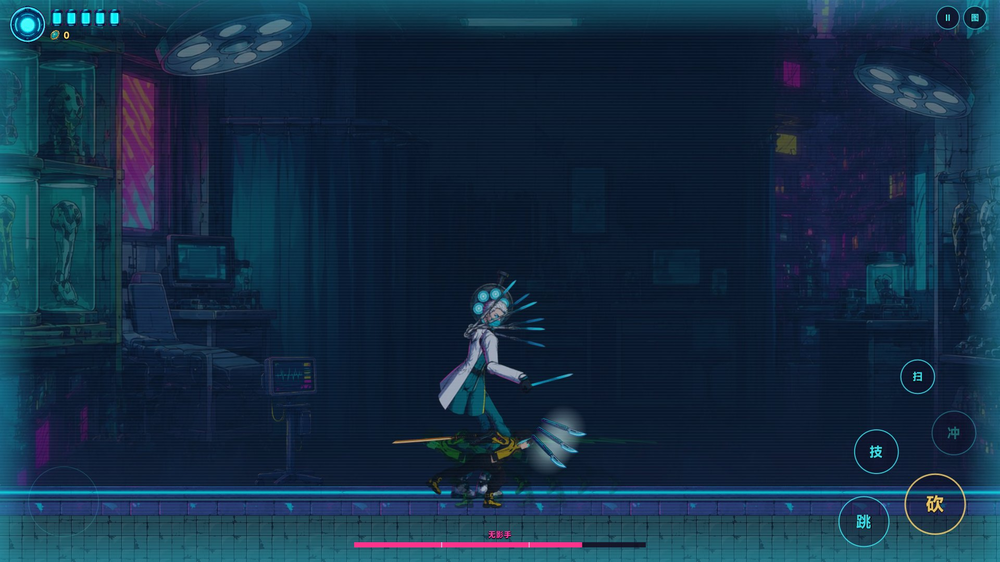

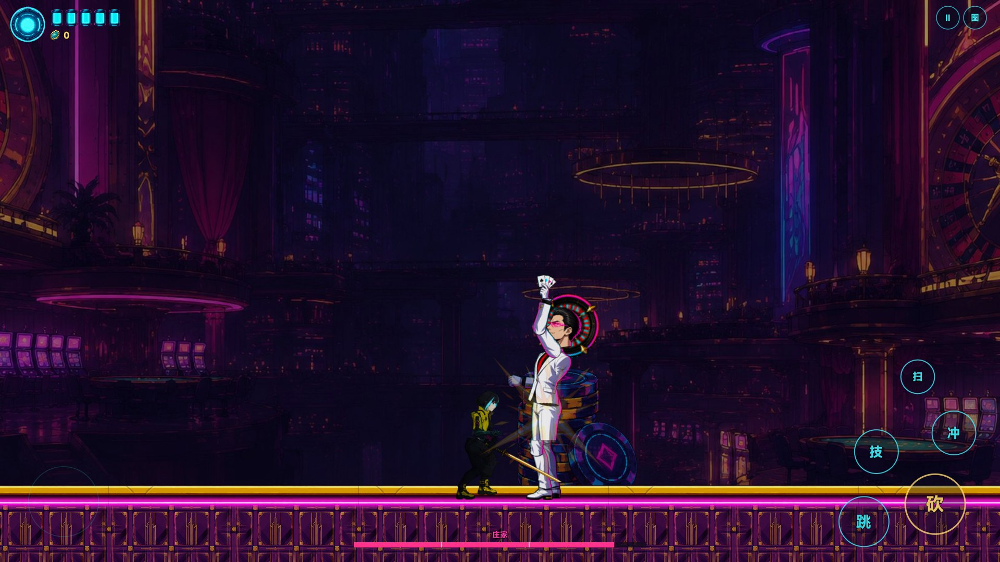

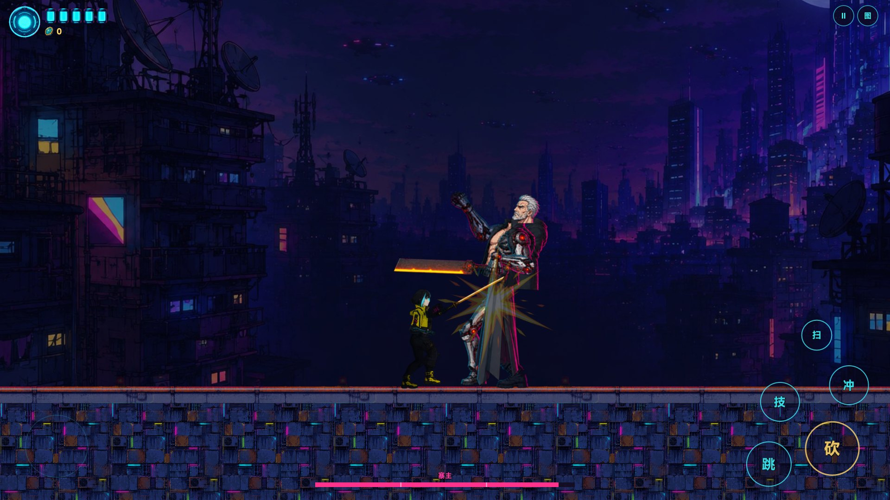

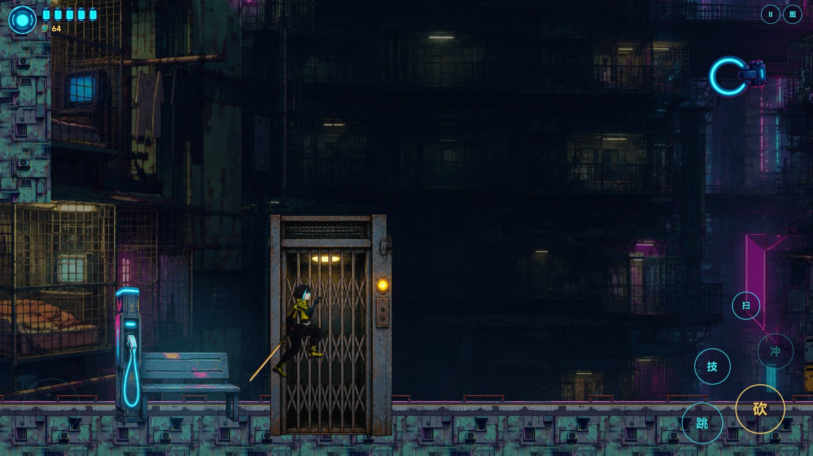

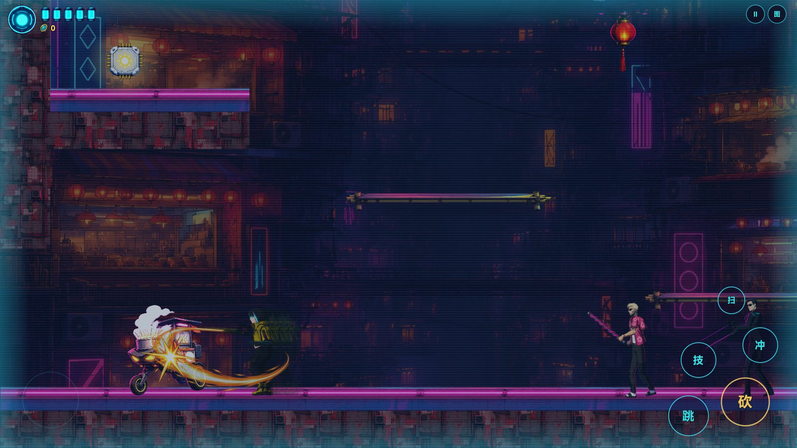
角色动作
每个动作一张循环 GIF，按游戏里的真实时长播放；一次性动作（攻击、倒下）在最后一帧停一下再重播。
阿零（主角）
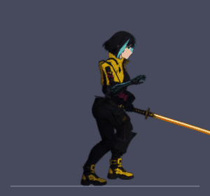
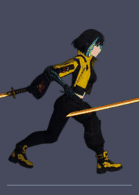
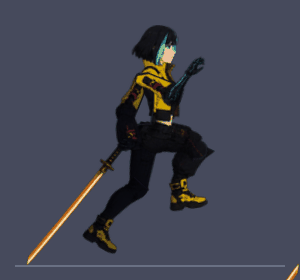
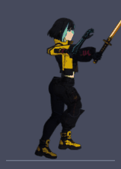
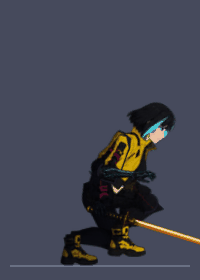
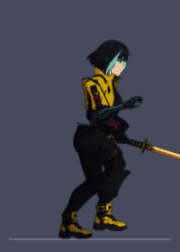
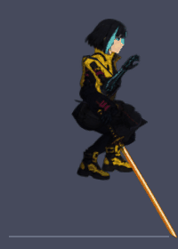
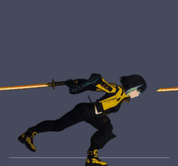
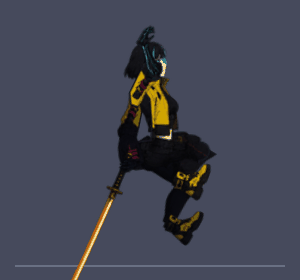
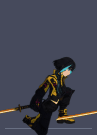
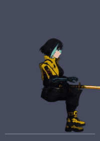
首领 · 猪肉荣
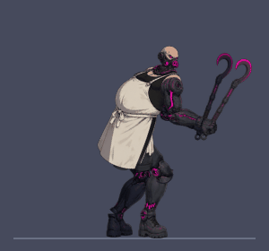
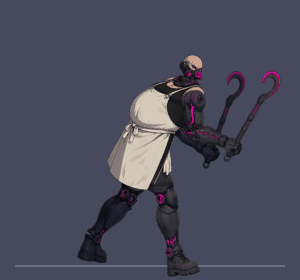
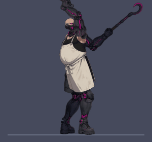
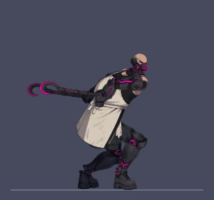
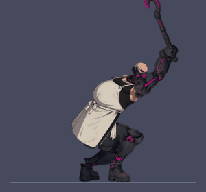
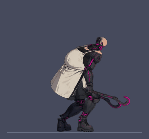
首领 · 无影手
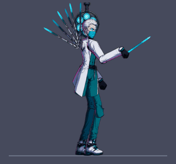
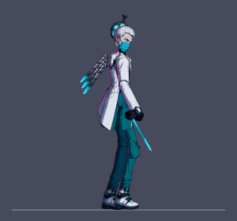
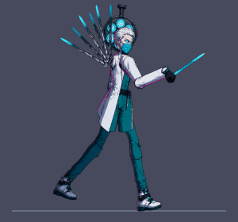
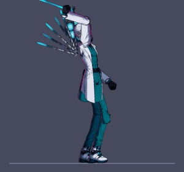
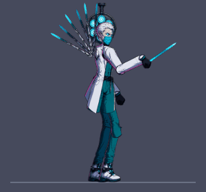
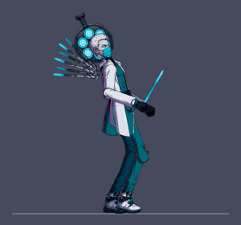
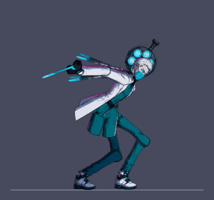
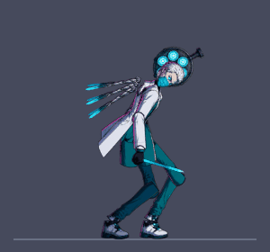
首领 · 庄家
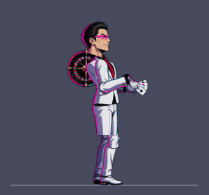
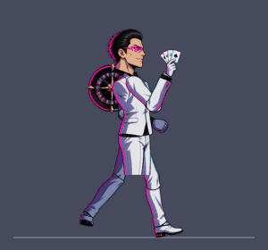
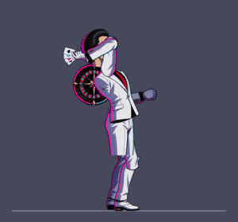
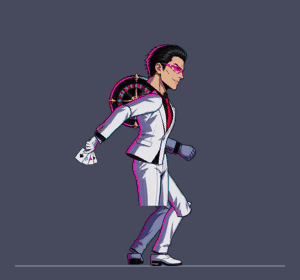
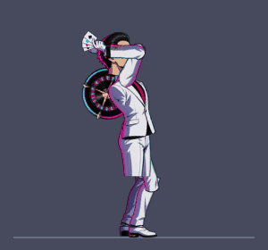
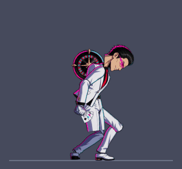
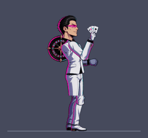
首领 · 寨主
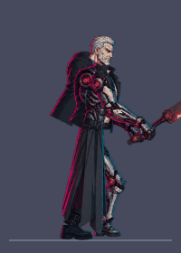
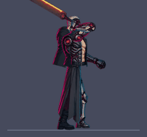
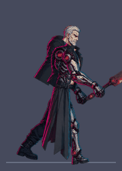
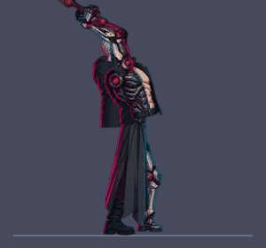
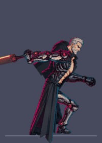
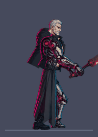
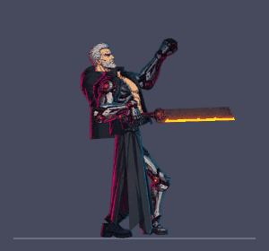
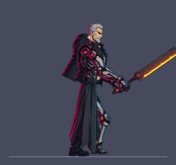
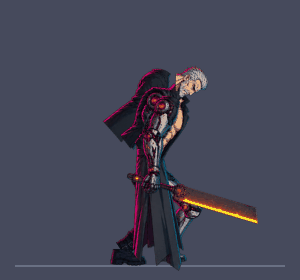
首领 · 双生保镖
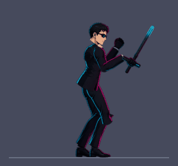
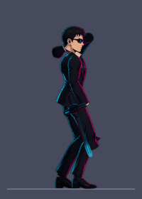
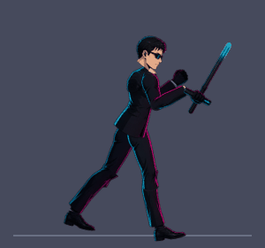
古惑仔
火头军
包租阿姨
黑诊所护士
失控病人
舞狮少年
盾卫
矛卫
狙击手
双刀精英
网页试玩
最新版本已经构建到 TapTap 制造。用电脑浏览器登录 TapTap 制造后打开：
https://maker.taptap.cn/app/bfd6086a-0741-44ff-99db-23f909c00dd1（点「预览」即可在网页里玩，键盘操作：WASD 或方向键移动，空格 / K 跳，J 砍，L 冲刺，I 钩索，U 按住放技能，M 地图，E 互动）。